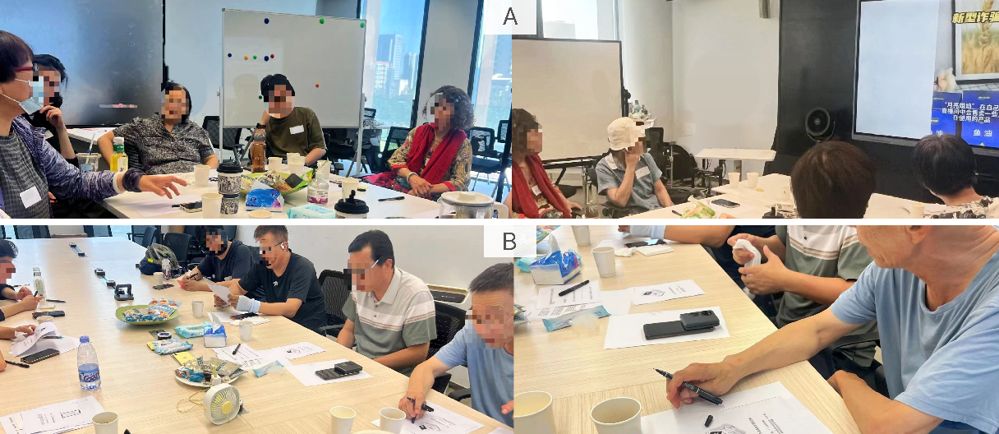
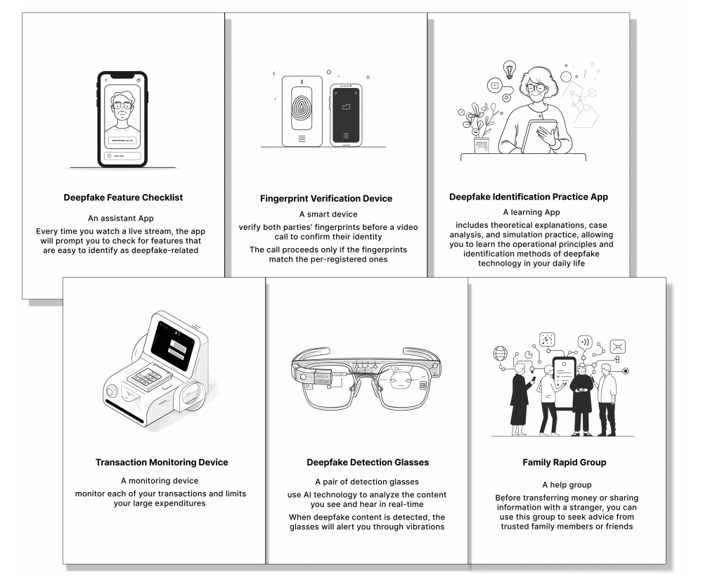

CHI 2025 / Participatory design
Hear Us, then Protect Us
Deepfake scams are often approached as a detection challenge, and older adults are frequently positioned as passive recipients of protection. This project reframes safeguarding as a design problem grounded in older adults’ interpretations of scams and their expectations for intervention—especially when “protection” may conflict with autonomy and decision-making.
We worked with 10 older adults aged 55–75 in a participatory workshop in Beijing. Short, news-style videos and reports presented simulated deepfake scams involving familiar roles, including family members, officials, and experts. Participants interpreted these scenarios and then critiqued provocative safeguarding concepts. These materials provided concrete situations through which they could discuss risks, question interventions, and explain what protection should involve.

The safeguarding concepts invited correction and disagreement. This made participants’ judgments about protection part of the research: what an intervention should help them understand, which choices it should leave open, and where responsibility should lie. Their responses drew attention to the possibility that protection could constrain the autonomy it was intended to support.
Our analysis identified autonomy, digital literacy, and shared responsibility as central considerations for safeguarding. Respecting autonomy means taking older adults’ judgments seriously when defining interventions. Supporting digital literacy connects protection with opportunities to understand risks and make decisions. Shared responsibility places obligations on platforms and public authorities alongside individuals, rather than treating scam prevention as a burden for older adults alone.

The study offers design directions for safeguards that respond to older adults’ own expectations of protection. The workshop materials supported that inquiry by making proposed interventions open to critique; the resulting directions call for further development and evaluation in use.
Published at CHI 2025: Hear Us, then Protect Us: Navigating Deepfake Scams and Safeguard Interventions with Older Adults through Participatory Design.
Yuxiang Zhai, Xiao Xue, Zekai Guo, Tongtong Jin, Yuting Diao, Jihong Jeung∗
My contribution
I designed and facilitated the participatory workshops using simulated scam videos and provocative safeguarding concepts, and contributed to reflexive thematic analysis.